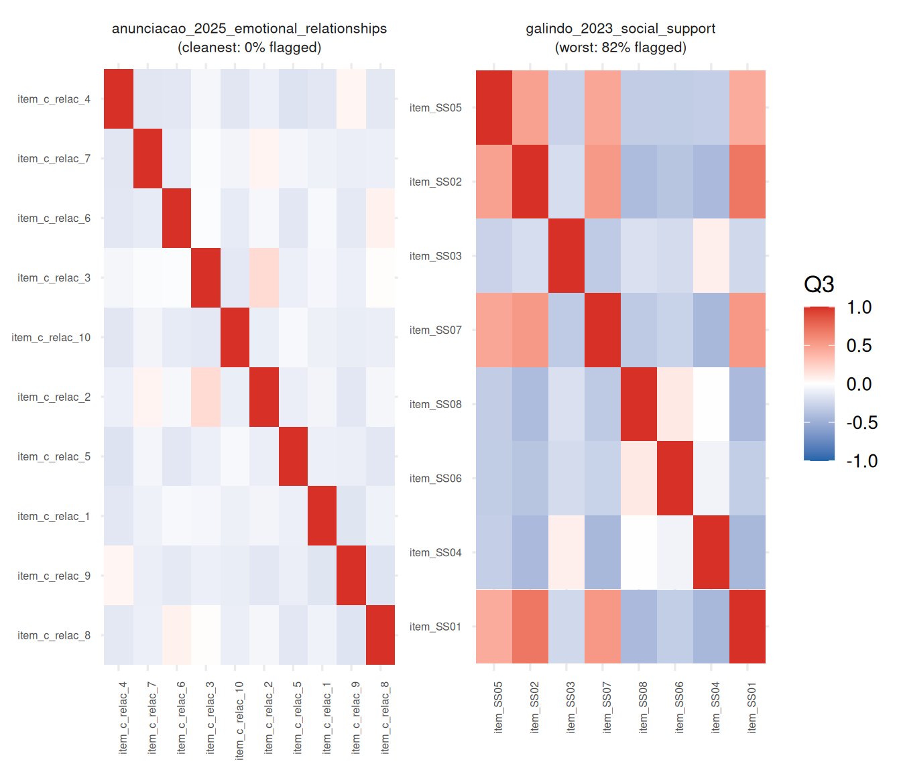
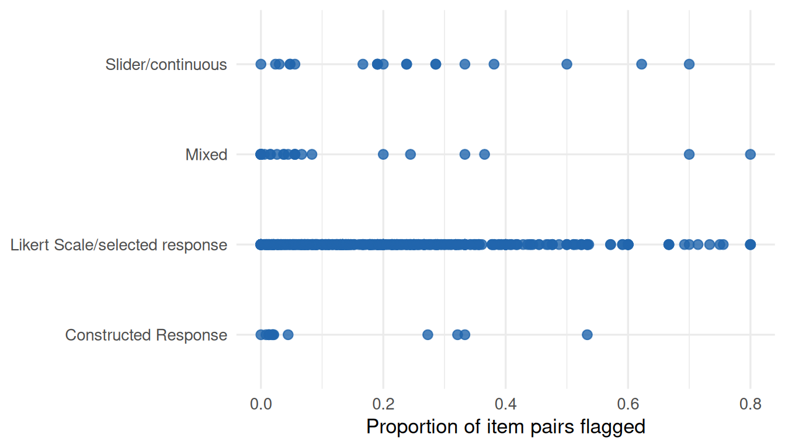

Local Dependence Across IRW: How Often Does Local Independence Fail?
Every unidimensional IRT model used elsewhere on this site – 2PL, GRM, IMV comparisons – assumes local independence: once you condition on the latent trait, item responses are unrelated. We fit the standard model to each IRW table and check for residual (Q3) correlation between item pairs, to see how often that assumption actually holds and where it concentrates.
Motivation
Every unidimensional IRT model used elsewhere on this site — the 2PL fits across cognitive datasets, the IMV comparisons, the CFA models in the CFA tutorial — rests on a core assumption: local independence. Once you condition on a person’s position on the latent trait, their responses to different items are assumed to be statistically independent. Practically, that means all the leftover covariance between two items should be explained by the single trait the model estimates; none should be left over once θ is accounted for.
Local independence is easy to state and easy to violate. Items can share a common passage or stimulus (testlets), overlap in wording, trigger each other (a fatigue or practice effect from one item bleeding into the next), or simply double up on a narrow sub-facet of the construct. When that happens, the model still fits — nothing about a standard 2PL or GRM estimation run will warn you that local independence has failed — but the consequences are real: item and person parameter standard errors are generally too small (the model effectively double-counts information from correlated items), and reliability/information estimates can be optimistic. This vignette asks a simple empirical question: after fitting the standard model IRW vignettes already use, how often is local independence actually violated in practice, and does it concentrate anywhere identifiable?
What Q3 measures
Q3 (Yen 1984) is a residual correlation: fit the unidimensional model, subtract out what it predicts, and correlate what’s left over between every pair of items.
Formally, for items \(j\) and \(k\), let \(\hat\theta_i\) be person \(i\)’s estimated position on the latent trait and \(E[x_{ij} \mid \hat\theta_i]\) the model-implied expected response (the item response function evaluated at \(\hat\theta_i\)). The residual is \(e_{ij} = x_{ij} - E[x_{ij} \mid \hat\theta_i]\), and
\[Q3_{jk} = \mathrm{cor}(e_{\cdot j},\, e_{\cdot k})\]
across everyone who answered both items. If the fitted trait fully explains why items \(j\) and \(k\) move together, nothing should be left in the residuals to correlate — \(Q3_{jk} \approx 0\). A large positive \(Q3_{jk}\) means the two items still share variance the model doesn’t know about: a shared passage or stimulus, overlapping wording, item cloning, a chaining or fatigue effect. A large negative \(Q3_{jk}\) is less common but structurally possible — items that trade off against each other beyond what the trait predicts.
Two structural details matter for reading the Q3 numbers below. First, \(Q3_{jk}\) carries a small negative bias even under perfect local independence — averaged over all pairs its expectation is roughly \(-1/(J-1)\) for \(J\) items — because \(\hat\theta\) is estimated from the same data it’s being checked against. Second, the 0.2 cutoff used throughout this vignette is a convention, not a hard test: with dozens of pairs per table, a few will cross it by chance alone even when the model fits well. Treat the proportion of flagged pairs as a continuous severity signal, not a certified count of “true” locally dependent pairs — a point the small simulation below makes concrete.
A minimal demo: watching Q3 respond to a dependence you control
Everything above is easier to see than to describe. The panel below simulates a tiny 8-item, 10,000-person 2PL test where every item loads on a single simulated trait — except item_7 and item_8, which are built to also share an extra, independent factor at a strength ρ you control. At ρ = 0 the two items behave like every other pair (nothing to detect, by construction); as ρ climbs toward 1, more and more of their variance comes from that shared extra factor instead of the modeled trait. Every simulated dataset is refit with the same one-factor 2PL model used elsewhere in this vignette, and the resulting Q3 matrix and flagged-pair proportion are shown live.
Watch the outlined (item_7, item_8) cell as you move the slider: it starts mildly negative (the small structural bias described above), crosses zero around ρ ≈ 0.3, and climbs past the flagging threshold by ρ ≈ 0.7 — exactly the pair that was constructed to be dependent. Other cells occasionally cross the threshold on their own even at ρ = 0, pure sampling noise across the 28 pairs tested at once; that’s the same phenomenon that keeps the proportion-flagged metric in the main analysis below a heuristic severity signal rather than a precise count.
Data and methods
Dataset selection
Code
all_candidates <- irw_filter(
n_items = c(5, 40),
n_participants = c(200, Inf)
)We cap items at 40 (and require at least 5) mainly for compute reasons: the number of item pairs — and so the size of the residual correlation matrix — grows quadratically with item count, and fitting a full unidimensional IRT model to every eligible IRW table is itself not cheap. 913 tables met this criterion as of July 2026. This pass analyzes all 913 of them.
Per-table computation
For each candidate table, fit_local_dependence():
- Fetches the table and builds a wide response matrix (
irw_fetch()+irw_long2resp()), downsampling to at most 10,000 respondents and dropping zero-variance items, mirroring the 2PL across datasets pipeline. - Fits a single-factor unidimensional model with
mirt: 2PL for binary items, the graded response model (GRM) for tables with 3-10 response categories. Tables outside that category range are skipped. Non- convergent fits are logged and dropped rather than forced into the results. - Computes Yen’s Q3 statistic (Yen 1984) for every item pair — the correlation between each pair’s model residuals (observed minus model-implied expected response). In practice this is a single call,
residuals(fit, type = "Q3"); the installedmirtversion exposes Q3 directly for both the 2PL and GRM fits used here, so no manual residual/probtrace()fallback was needed (confirmed by piloting on a known binary table and a known polytomous table before running the batch). - Flags any pair with
|Q3| > 0.2as locally dependent. This threshold is a common convention, not a hard statistical cutoff — treat the proportion of flagged pairs as a continuous severity signal, not a binary pass/fail per table. - Records, per table: total item pairs, number and proportion flagged, max and mean
|Q3|, plusconstruct_typeanditem_formatfrom IRW’s tags for the cross-tab below.
Code
fit_local_dependence <- function(table_name) {
resp <- fetch_wide(table_name) # irw_fetch() + irw_long2resp(), cleaned
fit <- mirt(resp, 1, itemtype = if (n_categories == 2) "2PL" else "graded")
q3 <- residuals(fit, type = "Q3", verbose = FALSE)
# ... flag pairs, summarize per table ...
}Of the 913 candidate tables in this pass, 791 produced usable results (the rest were dropped for too few usable items, an out-of-range category count, or a model that didn’t converge).
Results
How often are item pairs flagged?
Code
flagged_plot_df <- summary_df %>%
arrange(prop_flagged) %>%
mutate(
rank = row_number(),
tooltip = paste0(
"Table: ", table,
"<br>Prop. flagged: ", round(prop_flagged, 3),
"<br>Model: ", itemtype
)
)
p <- ggplot(flagged_plot_df, aes(x = prop_flagged, y = rank, colour = itemtype, text = tooltip)) +
geom_point(size = 2) +
scale_colour_manual(values = c("2PL" = irw_blue, "graded" = irw_red), name = "Model") +
labs(x = "Proportion of item pairs flagged", y = NULL) +
theme(axis.text.y = element_blank(), axis.ticks.y = element_blank())
ggplotly(p, tooltip = "text") %>%
layout(legend = list(orientation = "h", y = -0.1))Most tables should sit toward the low end of Figure 1 — a handful of flagged pairs out of many, consistent with local independence holding approximately, as intended by design. The tables at the high end are the ones worth a closer look: a large fraction of their item pairs still share residual variance the single-trait model didn’t capture.
A worst case and a clean case, side by side
Code
worst_table <- summary_df %>% slice_max(prop_flagged, n = 1, with_ties = FALSE) %>% pull(table)
clean_table <- summary_df %>% slice_min(prop_flagged, n = 1, with_ties = FALSE) %>% pull(table)
q3_long <- function(tbl) {
m <- q3_matrices[[tbl]]
as.data.frame(as.table(m)) %>%
rename(item1 = Var1, item2 = Var2, q3 = Freq) %>%
mutate(table = tbl)
}
q3_pair_df <- bind_rows(
q3_long(worst_table) %>% mutate(panel = paste0(worst_table, " (worst: ",
round(summary_df$prop_flagged[summary_df$table == worst_table] * 100), "% flagged)")),
q3_long(clean_table) %>% mutate(panel = paste0(clean_table, " (cleanest: ",
round(summary_df$prop_flagged[summary_df$table == clean_table] * 100), "% flagged)"))
)
ggplot(q3_pair_df, aes(x = item1, y = item2, fill = q3)) +
geom_tile() +
scale_fill_gradient2(low = irw_blue, mid = "white", high = irw_red, midpoint = 0,
limits = c(-1, 1), name = "Q3") +
scale_y_discrete(limits = rev) +
facet_wrap(~panel, scales = "free", labeller = label_wrap_gen(width = 28)) +
labs(x = NULL, y = NULL) +
theme(axis.text.x = element_text(angle = 90, hjust = 1, size = 6),
axis.text.y = element_text(size = 6),
strip.text = element_text(size = 8, lineheight = 1.1))
galindo_2023_social_support is the table with the largest share of flagged pairs in this sample; anunciacao_2025_emotional_relationships is the cleanest. Side by side in Figure 2, the contrast is visible directly in the tile pattern: a mostly-white matrix with a few isolated warm/cool cells (independence approximately holding) versus a matrix with a broader spread of nonzero residual correlation.
Does it concentrate by item format?
Code
ggplot(summary_df %>% filter(!is.na(item_format)),
aes(x = prop_flagged, y = item_format)) +
geom_point(colour = irw_blue, size = 2.5, alpha = 0.8) +
labs(x = "Proportion of item pairs flagged", y = NULL)
Read Figure 3 for where local dependence concentrates across the formats represented in this sample.
Two case studies against known structure
Everything above treats a flagged pair as a black box: Q3 says two items share residual variance, but not why. IRW carries two kinds of independent, dataset-author-asserted information that let us check whether flagged pairs correspond to something real rather than model noise: item_family — an explicit id IRW’s data standard uses to mark testlets, clone items, or items with obvious common features — and free-text item wording, which we can compare lexically between item pairs.
Case study 1: does Q3 recover a known testlet structure?
Code
strip_item_prefix <- function(x) sub("^item_", "", x)
item_family_case_study <- bind_rows(lapply(names(item_family_list), function(tbl) {
q3 <- q3_matrices[[tbl]]
fam <- item_family_list[[tbl]]
if (is.null(q3) || is.null(fam)) return(NULL)
items <- rownames(q3)
raw_ids <- strip_item_prefix(items)
fam_id <- setNames(fam$item_family[match(raw_ids, fam$item)], items)
pair_idx <- combn(items, 2)
q3_vals <- mapply(function(a, b) q3[a, b], pair_idx[1, ], pair_idx[2, ])
same_fam <- mapply(function(a, b) !is.na(fam_id[a]) && !is.na(fam_id[b]) && fam_id[a] == fam_id[b],
pair_idx[1, ], pair_idx[2, ])
keep <- !is.na(q3_vals)
tibble(table = tbl, q3 = q3_vals[keep], same_family = same_fam[keep])
}))
item_family_case_study %>%
mutate(flagged = abs(q3) > 0.2) %>%
group_by(table, same_family) %>%
summarise(n_pairs = n(), prop_flagged = mean(flagged), .groups = "drop") %>%
mutate(same_family = ifelse(same_family, "Same item_family", "Different / no family")) %>%
pivot_wider(names_from = same_family, values_from = c(n_pairs, prop_flagged)) %>%
knitr::kable(digits = 2)| table | n_pairs_Different / no family | n_pairs_Same item_family | prop_flagged_Different / no family | prop_flagged_Same item_family |
|---|---|---|---|---|
| chakraborty2026_IWAH_IRW | 405 | 30 | 0.23 | 0.70 |
| g308_sirt | 159 | 31 | 0.02 | 0.03 |
item_family turns out to be rare in current IRW holdings: only 2 of the 791 tables in this pass carry a usable grouping (a non-NA family id shared by at least two items). One of them, chakraborty2026_IWAH_IRW, is a clean validation case: its item_family groups the same base item repeated across measurement rounds (e.g. IWAH_3_r1 and IWAH_3_r3 share family 3) — literally the “clone items” case the IRW standard describes. Same-family pairs there are flagged at roughly three times the rate of different-family pairs. That’s reassuring: Q3 is recovering a real, independently-asserted structure, not just noise. It’s also the only table in this sample where the check has much power — treat this as a single confirmatory example, not a systematic test, until more IRW tables carry item_family metadata.
Practical implications
Finding local dependence doesn’t mean the unidimensional fit is useless — it means the reported standard errors and reliability are likely optimistic for the affected tables, and that a more structured model would fit better. The standard remedies are bifactor models (a general trait plus item-cluster-specific nuisance factors) and testlet models (Wainer and Kiely 1987) (which explicitly model the shared testlet effect as its own random effect per person-testlet). Both require identifying which items cluster together, either from known content structure (a shared passage, a shared stem) or empirically from which pairs get flagged here. Neither is implemented in this vignette — flagging which tables and item pairs would benefit from that additional structure is the contribution here; fitting the remedy is a natural next step.
Limitations
The |Q3| > 0.2 threshold is a convention, not a statistical test. Q3 has a null distribution that depends on sample size and test length, and values well below 0.2 can be statistically significant in large samples while values above it can occur by chance in small ones. Treat the flagged proportion as a comparative severity signal across IRW tables, not as a calibrated p-value.
Item pairs, not global structure. Q3 is inherently pairwise: it flags which pairs share residual variance, but two different tables with the same flagged-proportion can have very different structure underneath — one might have a handful of tightly clustered testlets, another scattered pairwise noise with no coherent grouping. The two case studies above are a start on distinguishing these (flagged pairs concentrating in a known item_family grouping, or sharing more item text), but both are limited by sparse metadata coverage — item_family in particular is populated for only 2 of 791 tables — so most tables here still can’t be checked against independent ground truth.
Model choice is coarse. Every table gets exactly one of two model families (2PL or GRM) based only on its category count, with no comparison against alternative models (3PL, nominal, bifactor) that might fit some tables better on their own terms. A table flagged here as locally dependent under a plain unidimensional model might not be under a better-specified one.
Reproducibility
Results were computed on July 19, 2026. To regenerate:
# 1. Re-run the compute script (from the project root)
source("vignettes/local_dependence_compute.R")
# 2. Re-render this page
quarto::quarto_render("vignettes/local_dependence.qmd")References
Wainer, Howard, and Gerald L. Kiely. 1987. “Item Clusters and Computerized Adaptive Testing: A Case for Testlets.” Journal of Educational Measurement 24 (3): 185–201.
Yen, Wendy M. 1984. “Effects of Local Item Dependence on the Fit and Equating Performance of the Three-Parameter Logistic Model.” Applied Psychological Measurement 8 (2): 125–45.